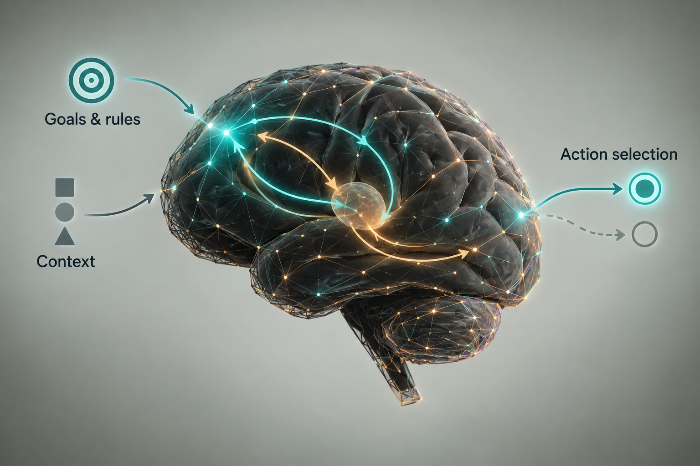
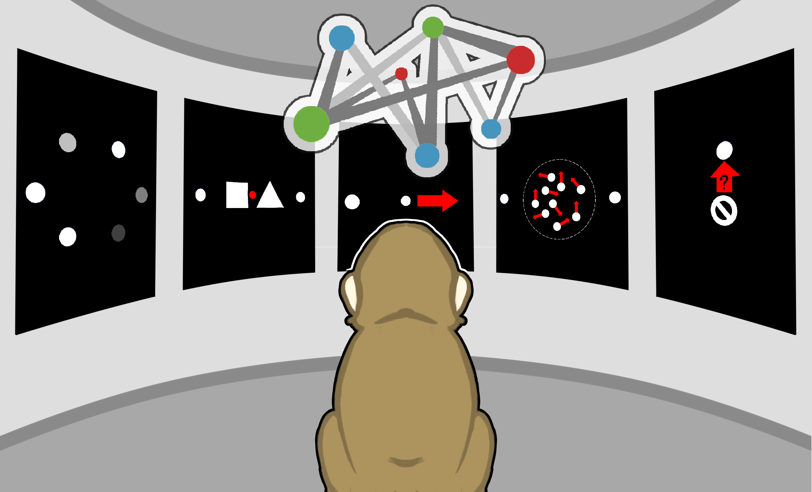
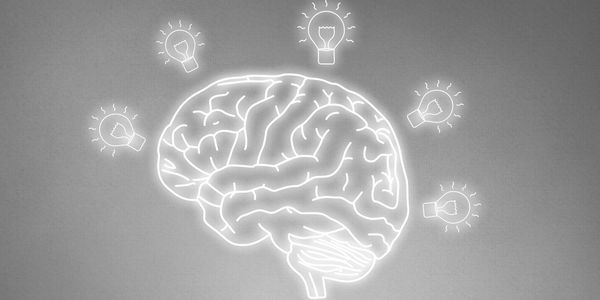
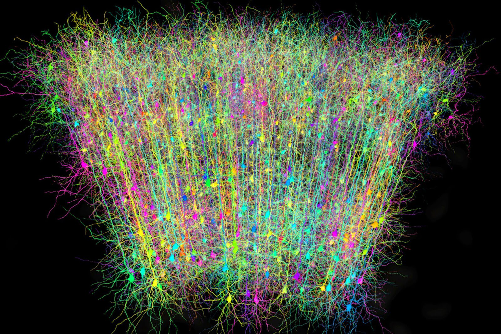

Compositional code is an important computational approach for representing both physical objects and abstract concepts. Our lab aims to uncover the compositional nature of symbolic computations during cognitive processes—including learning, memory, and problem-solving.
We study higher cognitive functions in animals and humans. Combining experimental technologies with machine learning methods—including dimensionality reduction, dynamical analysis, and alignment between neural networks—we investigate neural computations, representational geometry, and dynamics. Our goal is to uncover principles of cognition and inform brain-inspired algorithms.

Cognitive Control
Cognitive control allows us to regulate thoughts and actions flexibly in accordance with internal goals. We study cortical–subcortical–cortical loops as dynamic control systems, using large-scale recordings across brain regions and projection-specific labeling tools to uncover the principles that shape their function.

Continual Learning
Humans and animals can learn to solve new problems rapidly with limited data. We investigate these learning processes across species to understand how knowledge is acquired and used, and to inform the development of brain-inspired intelligence algorithms.

Problem Solving
How do we plan in mathematical and physical worlds? We investigate the neural computations underlying multi-step planning and reasoning in monkeys and humans, including human-specific cognitive functions. We also explore how large language models and embodied AI can support this research.

Explore new techniques
We develop and apply new experimental techniques, with a particular focus on optical imaging. We aim to image broader areas and deeper structures of the brain, and to enable large-scale electrophysiology with opto-tagging in nonhuman primates.